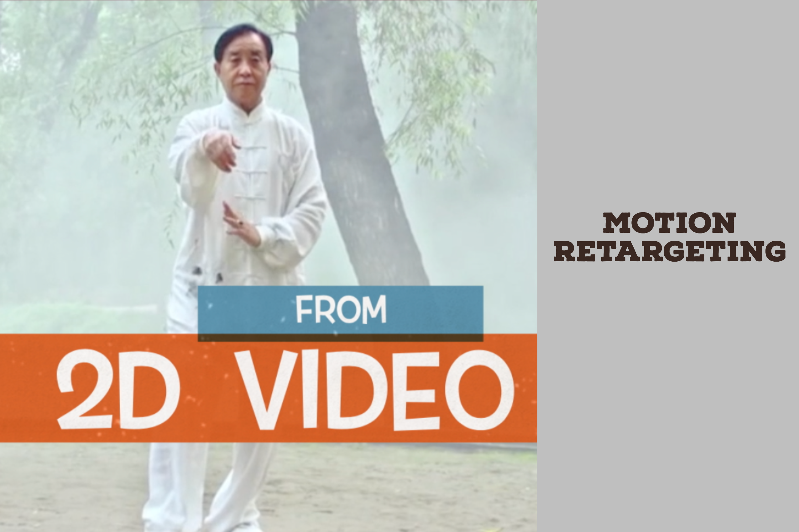
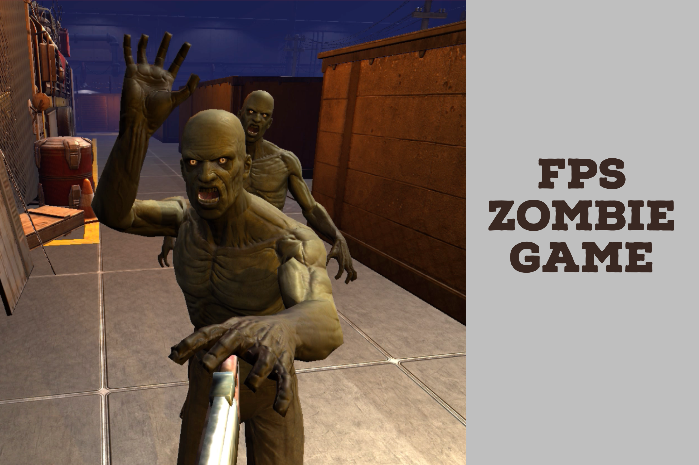
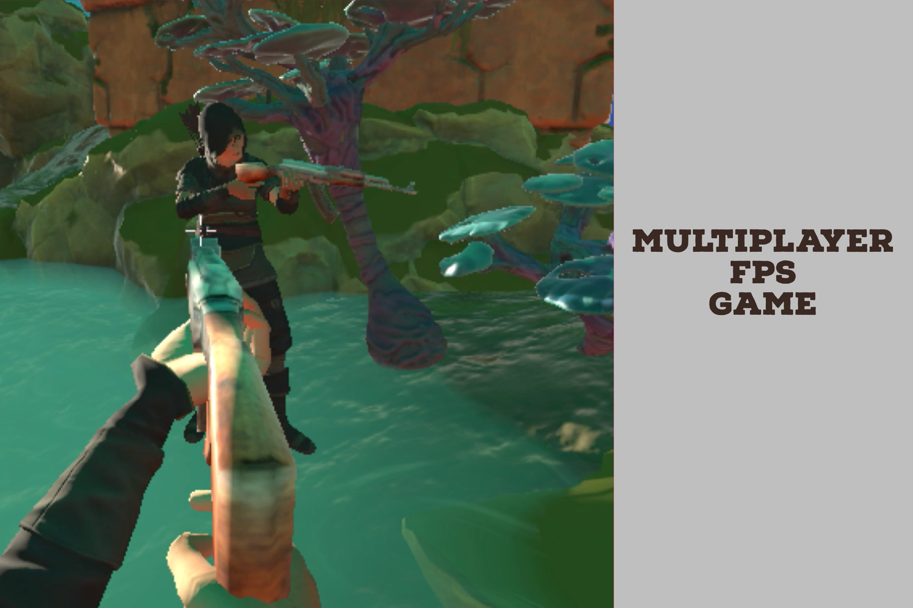
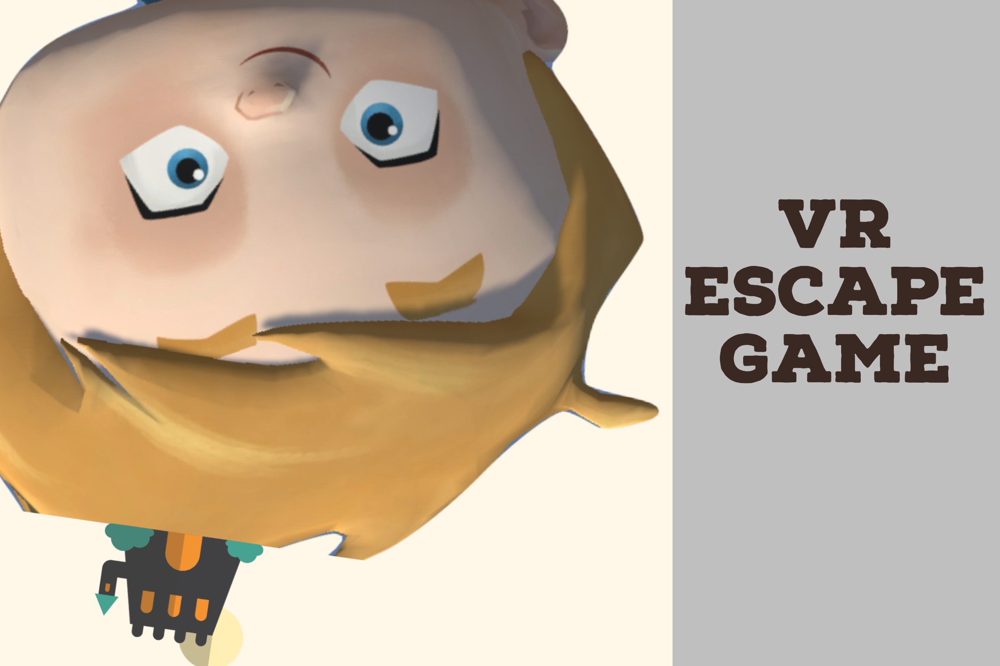
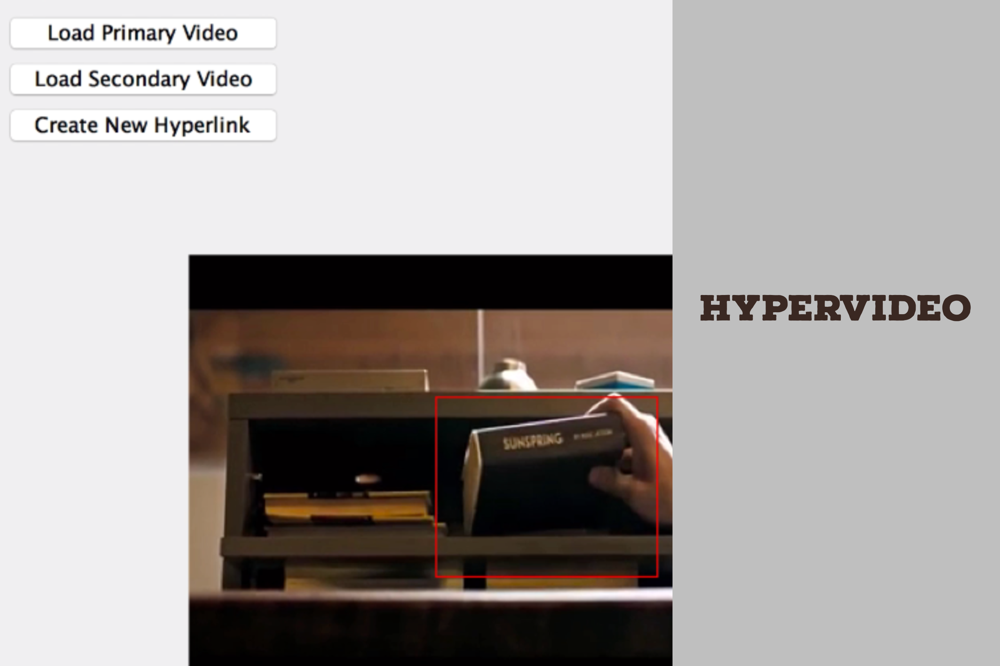
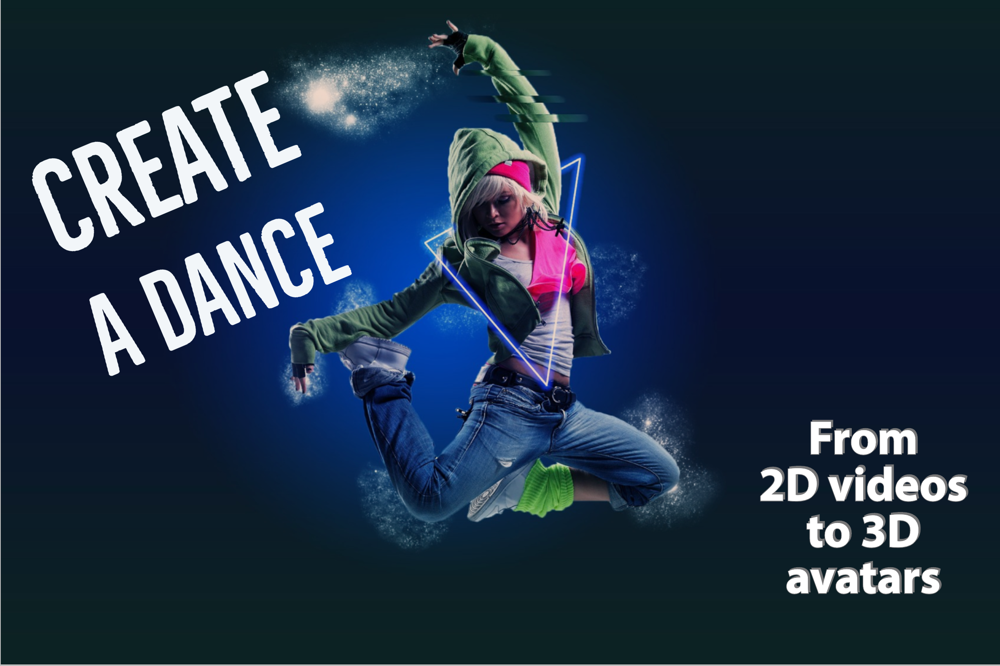
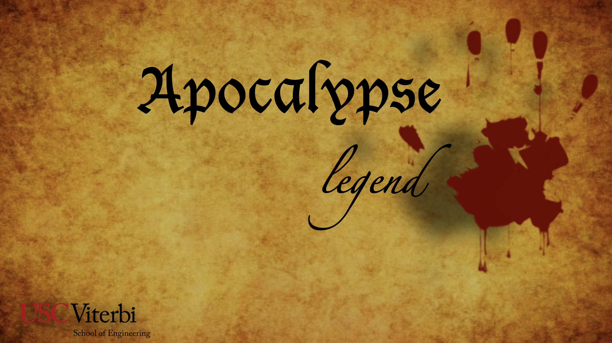

List of Projects
Welcome to my projects gallary! These projects are mainly about motion retargeting, first person shooter game design, VR escape game application, and interactive video - Hypervideo. Check the list to get more detail on these projects.

Create a Dance (Motion Retargeting Based on Deep Learning Method)
How to design your own motion capture files? And how to use these motions to drive any 3D avatars? Here comes an answer. This project - Create a Dance mainly focuses on how to sovle this problem. Inspried by one of popular games - Just Dance. I started to build a pipline: From 2D videos to get 3D motions, and use 3D motions to drive any 3D avatars. Finally, I can use the motions from 2D videos to drive any 3D avatars. We can let the 3D avatars do as we do, let's create a dance!
Apocalypse (First-Person Shooter Game)
This is my first game project - Apocalypse. This game is first-person zombie shooter game, you need to use your weapon to shoot the zombies. Otherwise, the zombies will attack you and you will die immediately. If you want to know more detail how I made this game, you can check my blog. When you play it, hope you enjoy the trip!
Apocalypse Legend (Multiplayer Shooter Game)
Apocalypse legend is the next level of Apocalypse. It is a multiplayer shooter game, based on UNet. Each player will create a private account and log in as a game palyer. In this game, palyer can make a team, collaborate with each other and make a recolution.
UP (Virtual Reality Escape Game)
Our cute avatar Dallas is a smart and adventurous boy. Oneday he woke up, he found himself was not in the real life. "Where am I?" Dallas was inside his dreams. He needs to run away. UP is an stand-alone VR game based on Steam VR and HTC Vive. This is a team project, thanks for all my WHTA'S UP teammates, and thanks for great contributions of the whole team!
Hypervideo (hyper linked interative video)
One of the necessary properties of digital multimedia content is that it needs to be interactive. Hypervideo video is a displayed video stream that contains embedded, user-clickable anchors allowing navigation between video and other hypermedia elements. Hypervideo combines video with a non-linear information structure, allowing a user to make choices based on the content of the video and the user's interests. This is a team project, thanks for my teammate Ivy's great contributions!Create a Dance
Is it possible to use the motions from 2D videoes to drive any 3D rigged avatars? Here comes the answer: Yes, it can be. In this project, I built a whole pipleline from 2D videos,getting the 2D keypoints,and used the 2D keypoints to make a prediction to get 3D joints locations and rotations based on deep learning method. After we got these 3D joints informations, we could generate BVH files, which could be used for motion retargeting part in the next step.

What is motion retargrting? Retargeting is the process of using a forward-kinematics animation recorded for a given source character to control the movements of one or more different target characters, which may have very different properties, scale, skeletal structure, limits of motion… This process essentially creates a mapping between the skeletal structure of the source character and the skeletal structure of the target character. It analyzes the movements carried out by the source character, determines how those movements should be reflected by the target character, and uses the inverse kinematics solver to find a final position for the target character that best reflects the original animation.
As you can see the demo on the left side, there are still some limitatons, which motivate me to do future reserach work. The first limitation is that most of the research paper only use sparse 2D key points (22 or 25 joints) to supervise the learning process, which may be insufficient for effective training. We need to figure out a new way to get more accurate predictions. The other limitation is that for motion retargting method now, it is hard to handle more complex 3D models, which has complicated skeleton topologies. This is one of research probelms of motion retargeting that I mainly focus on. If you want ot know more detail on this project, check my Blog here.
Apocalypse Legend
Hey, welcome to Apocalypse! This was my first time trying to write a game independently, and also my first time trying to learn how to use Unity. I would like to share my game design experience to you!
The whole game design project contains two parts: the first part is first person shooter zombie game design; In the second part, I was trying to add some fancy parts and some exciting interactions, and I converted the FPS game into Multiplayer FPS game. That would be cool if you try to play with your friends, and it also seems like you can gain more entertainment when you play with others in the same game environment.

It’s hard to tell what is real and what is unreal, maybe one day it’s hard to tell what the differences between machine and human, with the development of artificial intelligence. Or maybe the next time when you try to open the door of the future, you will open a Pandora's box.
Inspired by the TV play Westworld, I would like to set our game background to the era of AI, even our main character is still dressed in Middle Ages suit...Given our player a name, let’s call him Seven, which is the serial number when he was designed by humans.
Of course Seven is an AI. Seven is different from his brothers and sisters, even though they were produced under the same assembly line, he has his own mind and emotions. That sounds creepy, but he is still under the control of humans. In this game, the first challenge for him is a zombie fight. Seven decides to make a revolution, fight for himself, strive through all the difficulties.
After he wins the war, will he start a new life as normal human or he is still in sandbox created by humans?
Let’s open the first page of our APOCALYPSE!
If you want to get more detail on how to design this kind of first person shooter game ,and want to know how to use UNet to add multiplayer functions, check my Blog here.
UP
This project is a team project, our team name is WHAT'S UP. Thanks for the great contributions of the whole team! This game is a stand-alone VR game based on physical property in First Person Perspective. Dallas is a handsome boy who lives happily in his life. One day, he finds out that he is under control by unknown. He needs to ran away.

This game is inspired by the cute little character from the game called human fall flat. Our main character would be able to deal with the difficulties from the surroundings with his rubber-made hands.
Having immersive experience from touching the game objects and holding the tools with physical properties is one of main goals that we want our player to have.
As a player, your goal is to go through all puzzles, dangers and surprises with tools and wits to escape. Once you wear the VR equipment, you are the main character! Now you are Dallas, use the VR handlers to do some achievements. In this game, you will come into a new scene, which is full of adventures and challenges. The VR handlers are your hands, when you press the buttons of the handlers, you can clutch the tools, like you can clutch a rope. When you want to move forward and turning, you can just walk in real life, the VR glasses would adjust you viewport when you turn your head.
Fight on Dallas!
Besides, if you want to see the game trailer, click here.
Hypervideo
This is a course project of Multimedia Systerm Design. As we all know, one of the necessary properties of digital multimedia content is that it needs to be interactive. Interactive Multimedia Content is available in different forms today. For this application, it contains two parts: the first part is creating an authoring tool to setup hyper linked videos; the second part is creating an interactive video player to interact with hypervideos.
Hypervideo video is a displayed video stream that contains embedded, user-clickable anchors allowing navigation between video and other hypermedia elements. Hypervideo is thus analogous to hypertext, where a reader clicks on a word in one document to retrieve information from another document, or from another place in the same document. Hypervideo thus combines video with a non-linear information structure, allowing a user to make choices based on the content of the video and the user's interests.